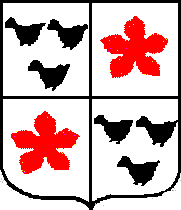

← Retour à la généalogie normande
Présentation

Cette page rassemble l'essentiel de la documentation que j'ai pu réunir concernant la famille de Caumont.
Vous y trouverez des extraits de registres paroissiaux, des actes notariés, des recherches de noblesse, des publications historiques, ainsi que diverses références généalogiques.
Il s'agit principalement d'un recueil documentaire destiné à mettre à disposition les sources consultées et les informations recueillies au fil de mes recherches.
Registres paroissiaux
Les extraits ci-dessous proviennent des registres paroissiaux consultés dans le cadre des recherches sur la famille de Caumont. Ils sont classés par commune afin de faciliter la navigation.
Documents notariaux
Cette rubrique rassemble les actes notariés, tabellionnages et archives judiciaires où apparaissent des membres de la famille de Caumont. Ces documents constituent souvent une source précieuse pour reconstituer les filiations, les patrimoines et les réseaux familiaux.
Recherches de noblesse
Les enquêtes de noblesse, rôles militaires et montres permettent de suivre la présence de la famille de Caumont au fil des siècles. Ces documents constituent souvent des jalons essentiels pour établir les filiations et situer les différentes branches familiales dans leur contexte historique.
Documents divers publiés
Cette rubrique rassemble les références historiques, archivistiques et bibliographiques où apparaissent des membres de la famille de Caumont ou les lieux qui lui sont associés.
Bayeux
- (1331-1458) Bayeux et Lisieux, villes épiscopales à la fin du Moyen Âge
- (1368-1375) Documents normands du règne de Charles V
- (1377-1454) Le Livre Rouge de l'Évêché de Bayeux
- (1396-1408) Sources médiévales de l'histoire de Normandie dans les bibliothèques de Bayeux
- (1407-1413) Gallia Regia
- (1408) État historique et géographique du diocèse de Bayeux
- (1412-1415) Mémoriaux de la Chambre des Comptes de Normandie (Dom Lenoir)
- (1418-1419) Dons faits par Henri V, roi d'Angleterre
Saint-Lô et les monnayers
- Le quartier de l'Enclos
- (1404-1427) Documents relatifs à l'histoire des monnaies frappées par les rois de France
- (1425-1432) Histoire numismatique de Henri V et Henri VI
- (1425-1580) La monnaie à Saint-Lô
- (1435) Le Cartulaire de l'Église Notre-Dame de Saint-Lô
- (1444) Mandement de Hue Spencer
- (1464) Notice sur l'église Notre-Dame de Saint-Lô
- (1464-1585) Mémoires sur l'Histoire du Cotentin et de ses villes
- (1476-1525) Documents manuscrits de la Bibliothèque nationale concernant Saint-Lô
- (1502-1515) Manuscrits de la Société d'Archéologie de la Manche
- (1512) Gallia Regia
- (1530-1580) L'Armorial de la Ville de Saint-Lô
Saint-Contest et Caen
- (1522-1688) Saint-Contest, histoire de la paroisse
- (1556-1564) Barreau de Caen
- (1564-1567) Registres protestants
Gourfaleur
- (1442-1657) Le fief de Gourfaleur
- (1453-1605) Aveux de la baronnie
- (1505) Mémoriaux de la Chambre des comptes de Normandie
- (1549) Le château de Saint-Lô et ses gouverneurs
- (1594) Croquants, rebelles et ligueurs en Cotentin
- (1550-1652) Revue Généalogique Normande
- (1647-1686) Chartrier Le Monnier de Gouville
- (1669) Répertoire du Fonds Réquier-Desjardins
Autres sources
Documents divers non publiés
Cette rubrique regroupe les fonds d'archives et les notes de travail consultés directement dans les dépôts d'archives ou auprès de sociétés savantes. Ces documents constituent souvent des sources inédites ou difficilement accessibles.
- Archives de la Société d'Archéologie de la Manche
- Abbaye d'Ardennes
- Fonds de Petiville
- Chartrier de Béron
- Service Historique de la Marine
- Fonds Baudre-Lepingard
- Fonds Le Duc
- Aveux
- Série 3B des Archives départementales de Rouen
- Chartrier de Thère
- Notes généalogiques de Pierre Lepesant
- Plaids de Graignes
Répertoires généalogiques
Les ouvrages et répertoires généalogiques constituent souvent un point de départ précieux pour l'étude des familles nobles et notables. Ils permettent d'identifier des filiations, de repérer des sources complémentaires et de situer la famille de Caumont dans un contexte généalogique plus large.